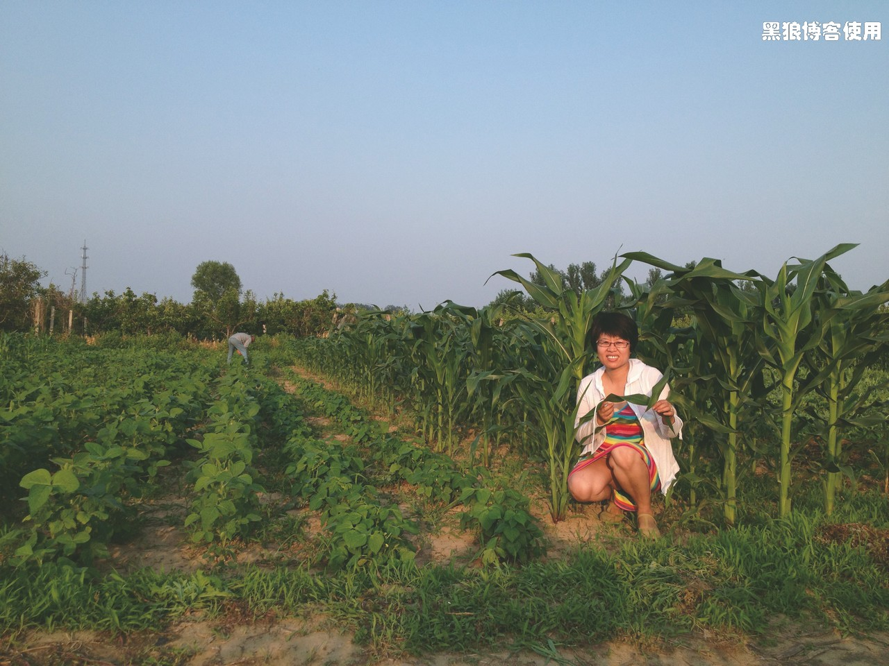

庄稼熟了，骑自行车去采摘
胡有理同志自从买了自行车后，一直不满足每天骑车上下班，也希望能跑个长途啥的。
怎奈何我最近总是加班，三四个月没骑车也没有锻炼。自从长了好几斤懒肉后，更是不想骑车运动了。
胡有理连续好几天的各种逼迫，又恰巧本周末没有加班，就被强拉着去采摘。
老胡预计6 点出发，谁知道起床已经9 点了，先把小孩打发走了（没给吃早饭，被姥爷骂了）。胡乱吃点儿东西，开始找各种骑车的用品，急匆匆下楼后发现自行车铺了厚厚一层土，车链子居然生锈了，车胎也没气了，折腾完，已经是 10点多了。
出发，不能犹豫，目的地：45 公里处的那片玉米地！
暴晒，汗流如注，眼睛居然都有点睁不开。

中午13 点左右，到了目的地（中午吃饭用了50 分钟）。地里长满了草，很高，无处下脚。
采摘了30 多棒玉米，半斤红豆，实在是受不了闷热的天气。30 分钟后，回返。
明显感觉今天浑身不得力，体力消耗不大，汗出的有点过多。不过，老胡一直是兴致盎然，兴奋异常。
到家时已经是晚上 6 点 20 分了。
也不知是感冒了还是消耗大了，居然有点低烧，也许是中暑了吧。
注：下面是 4 月 30 日，播种前灌溉的壮观场面，胡有理同志是总指挥，指挥着老弱，包括黑狼，在挥汗奋战着！还有一个小外援，注意到了吗？
5月 4 日 播种时的照片，种的是玉米、黄豆、绿豆。
6月 12日 除草时的照片，玉米、黄豆、绿豆都长出来了。
6月 23日 除草时的照片，胡有理依旧是总指挥。
7月7日 除草时，大豆包在田头路上摆拍动作。
评论